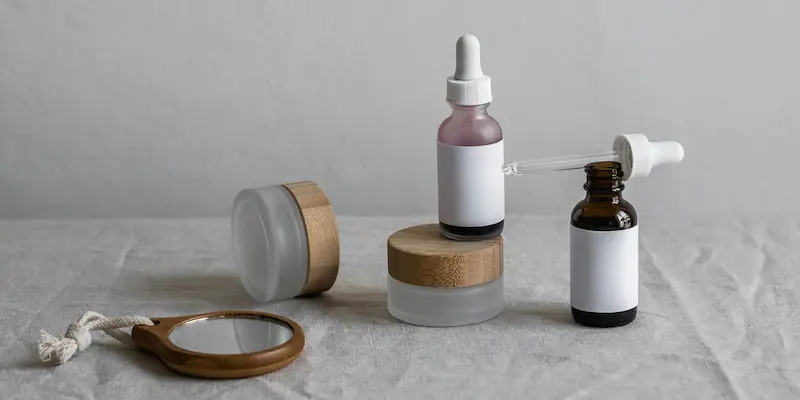
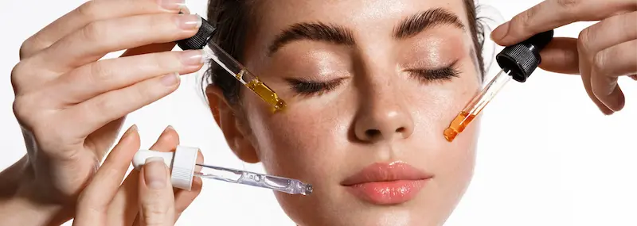
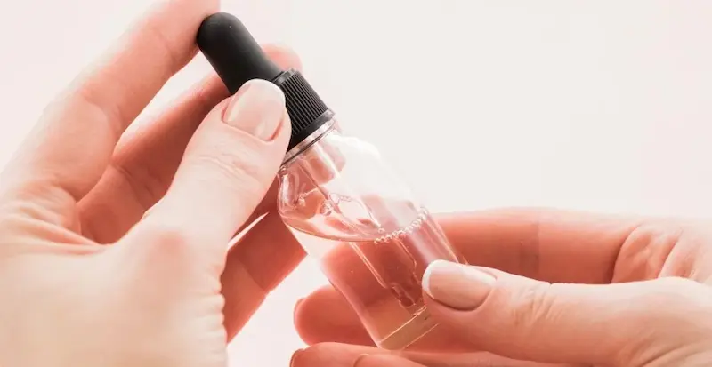
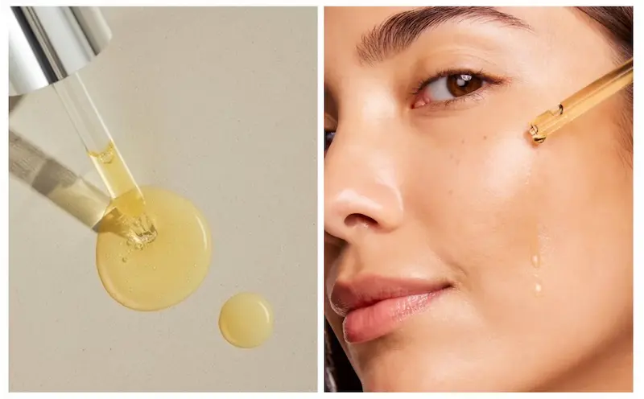

Acizi exfolianți pentru regenerarea și netezirea pieliiPrincipalele tipuri de acizi
Acizi AHA
- Glicolic
- Lactic
- Mandelic
- Malic (Mere)
Acizi BHA
- Acid Salicilic
Antioxidanți
- Acid Ferulic

Cum acționează acizii asupra pielii?
AHA — Acizi alfa-hidroxi
Acizii AHA sunt acizi solubili în apă, care acționează la suprafața pielii. Ei exfoliază stratul cornos, îmbunătățesc textura și oferă luminozitate tenului.
Sunt ideali pentru pielea uscată, ternă sau cu semne de fotoîmbătrânire. Utilizați corect, ajută la uniformizarea nuanței și la stimularea reînnoirii celulare.
Acizi BHA (Beta-hidroxi)
Acizii BHA sunt solubili în ulei și pătrund în pori, fiind ideali pentru ten gras, mixt și acneic.
PHA — Acizi poli-hidroxi
Acizii PHA sunt o generație mai blândă de exfolianți, cu molecule mai mari, care acționează lent și delicat.
Sunt potriviți pentru pielea sensibilă, cu rozacee sau barieră compromisă, oferind exfoliere fără iritații.
Cu ce NU se recomandă combinarea acizilor
Pentru a evita iritațiile și supraexfolierea, unele ingrediente nu trebuie folosite în aceeași rutină cu acizii AHA și BHA.
În ce tipuri de produse se găsesc acizii AHA și BHA
Acizii sunt incluși în diferite tipuri de produse, în funcție de scop și concentrație.

Acid lactic
Acidul lactic este un acid AHA blând, obținut din fermentația zaharurilor. Acționează delicat asupra pielii, exfoliind celulele moarte și stimulând hidratarea naturală.
Este potrivit pentru pielea uscată, sensibilă și deshidratată, deoarece exfoliază fără a provoca iritații și contribuie la menținerea echilibrului hidrolipidic.
Acid glicolic
Acidul glicolic este cel mai activ acid AHA, având molecule foarte mici care pătrund rapid în stratul superficial al pielii.
Este utilizat pentru exfoliere intensă, reducerea ridurilor fine și stimularea regenerării celulare, fiind recomandat pielii mature sau cu textură neuniformă.
Acid mandelic
Acidul mandelic este un acid AHA cu molecule mai mari, care acționează lent și controlat asupra pielii.
Este ideal pentru pielea sensibilă, cu tendință acneică sau hiperpigmentare, deoarece exfoliază delicat și are proprietăți antibacteriene.
Acid malic
Acidul malic este un AHA cu o moleculă mai mare comparativ cu acidul glicolic, având o acțiune mai blândă asupra pielii. Oferă o exfoliere delicată și ajută la menținerea echilibrului natural al pielii.
Este recomandat în special pentru pielea sensibilă, uscată și mixtă, precum și pentru persoanele care încep utilizarea acizilor. Este frecvent inclus în formule împreună cu alți AHA pentru a reduce riscul de iritații.
Acid salicilic
Acidul salicilic este un acid BHA solubil în ulei, capabil să pătrundă în pori și să dizolve excesul de sebum.
Este ingredientul principal pentru îngrijirea pielii grase și acneice, reducând punctele negre, inflamațiile și blocarea porilor.
Cum se utilizează Acidul Salicilic (BHA)
Frecvența: Începeți cu 2-3 utilizări pe săptămână, crescând treptat frecvența la o dată pe zi (seara) doar dacă pielea nu prezintă semne de uscăciune.
Aplicare: Se aplică pe pielea curată și perfect uscată. Fiind un acid liposolubil, acesta pătrunde prin sebum pentru a curăța porii în profunzime.
Zona vizată: Poate fi aplicat pe toată fața (evitând zona ochilor) sau doar pe zonele problematice (zona T, puncte negre).
Regulă de aur: După absorbție, aplicați obligatoriu o cremă hidratantă. Utilizarea SPF-ului a doua zi este esențială pentru a preveni iritațiile.

Acidul Ferulic: Scutul împotriva foto-îmbătrânirii
Acidul Ferulic este un antioxidant vegetal puternic care neutralizează radicalii liberi responsabili pentru apariția ridurilor și a petelor pigmentare. Spre deosebire de acizii exfolianți, rolul său principal este de protecție și reparare.
Atunci când este combinat cu Vitamina C, Acidul Ferulic îi dublează eficacitatea și îi sporește stabilitatea. Acesta acționează ca un stabilizator natural, ajutând pielea să lupte împotriva stresului oxidativ cauzat de soare și poluarea urbană, menținând fermitatea și elasticitatea tenului.
Cum se utilizează Acidul Ferulic
Frecvența: Fiind un antioxidant blând și non-exfoliant, poate fi utilizat zilnic, fără perioade de pauză.
Momentul optim: Cel mai eficient este aplicat dimineața. Rolul său principal este de a proteja pielea de radicalii liberi generați de radiațiile UV și poluare pe parcursul zilei.
Combinația perfectă: Utilizați-l împreună cu Vitamina C. Acidul Ferulic stabilizează formula vitaminei și îi dublează puterea antioxidantă.
Efect sporit: Aplicați-l înainte de crema cu protecție solară. Acidul ferulic potențează eficiența filtrelor SPF, oferind un scut dublu împotriva foto-îmbătrânirii.
Cui sunt recomandați acizii?
Recomandați
- ten gras și mixt
- pori dilatați
- pete post-acnee
- textură neuniformă
Cu prudență
- ten sensibil sau iritat
- barieră cutanată afectată
- rozacee activă
Acidul Tranexamic: Inovația împotriva petelor
Acidul Tranexamic este un ingredient revoluționar care acționează diferit față de acizii obișnuiți. Acesta nu exfoliază pielea, ci blochează comunicarea dintre celulele de suprafață și melanocite, oprind producția excesivă de pigment chiar de la sursă.
Este considerat standardul de aur în tratarea melasmei și a hiperpigmentării post-inflamatorii. Spre deosebire de alte ingrediente de iluminare, acesta este extrem de stabil și bine tolerat, fiind ideal chiar și pentru tenul sensibil care nu suportă concentrații mari de Vitamina C sau Retinol.
De ce să alegi Acidul Tranexamic?
Întrebări frecvente
Cât de des pot folosi acizii?
De 1–3 ori pe săptămână, în funcție de tipul pielii.
Pot folosi acizii vara?
Da, dar este obligatoriu SPF zilnic.
Pot combina AHA și BHA?
Da, dar cu prudență și nu în concentrații mari.
Sunt potriviți pentru ten sensibil?
Doar în concentrații mici și cu introducere treptată.
Împărtășește experiența ta
Părerea ta îi ajută pe alții să înțeleagă dacă acest ingredient li se potrivește. Chiar și 1–2 fraze sunt utile
Nu știți ce să scrieți? Selectați opțiunile — textul se va genera automat
Publicăm doar recenzii reale. Reclama și linkurile nu trec de moderare
Prin trimiterea comentariului, sunteți de acord cu Politica de confidențialitate.